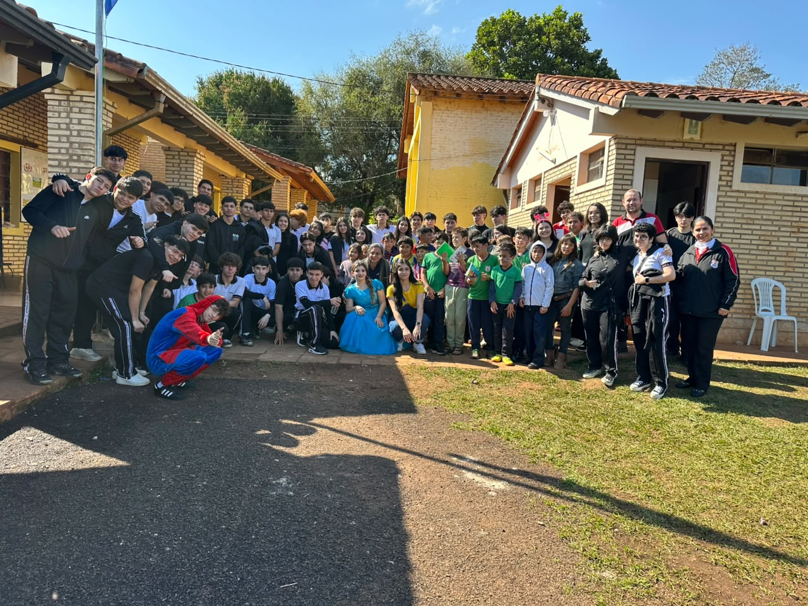

Tecnología para Todos
Proyecto socioeducativo desarrollado por los 20 alumnos del Tercer Curso del Bachillerato Técnico en Informática del Colegio Gimnasio del Saber (Ciudad del Este). Articulamos autogestión cooperativa, adecuación eléctrica reglamentaria, donación de climatización y desarrollo web en favor de la Escuela Básica N.º 6711 «Madre Teresa de Calcuta».

El Macroproyecto
Una propuesta pedagógica interdisciplinaria donde articulamos Informática, Algorítmica, Matemática Aplicada y Administración Financiera para dar respuesta a una necesidad real comunitaria en Ciudad del Este.
¿Qué es «Tecnología para Todos»?
Es la iniciativa central del 3.º BTI fundamentada en la metodología de Aprendizaje-Servicio Solidario (ApS). Tras diagnosticar el aula de la Escuela Básica N.º 6711 «Madre Teresa de Calcuta» del km 9 de Ciudad del Este, nos propusimos erradicar la fatiga térmica de los educandos mediante la donación e instalación de equipos de aire acondicionado, complementado con una línea eléctrica protegida y este portal web de memoria técnica.
¿Por qué y cómo lo realizamos?
En nuestro país las temperaturas extremas deterioran la atención y el rendimiento cognitivo. El proyecto no dependió de fondos externos: fue solventado al 100% mediante autogestión con una gran Pizzeada Solidaria organizada por los alumnos. Así unimos el rigor técnico de la normativa ANDE con el compromiso cívico y los valores humanos de cooperación y solidaridad.
2. Promover e incentivar los valores humanos de solidaridad, cooperación y responsabilidad social en los alumnos del 3.º BTI.
Objetivos Específicos Oficiales
Línea de Alimentación Segura
Efectuar el diagnóstico e instalar una línea independiente, protección termomagnética de 16 A y conexión a tierra conforme a las normas ANDE.
Montaje y Puesta en Marcha
Efectuar el montaje, fijación, interconexión y calibración del equipo de aire acondicionado tipo Split.
Plataforma Web Frontend
Diseñar, programar y desplegar el sitio web interactivo y responsivo con HTML5 semántico, CSS3 y JavaScript para digitalizar la memoria y divulgación técnica.
Eficiencia Energética
Impartir charlas sobre el uso eficiente del equipo (consigna a 24 °C, ambientes cerrados y limpieza de filtros de aire).
Pizzeada Solidaria
Ejecutar actividades de administración financiera y venta comunitaria para solventar el 100% de los costos operativos y de adquisición del equipamiento.
Socialización y Memoria Final
Redactar el informe de investigación, documentar el manual de usuario y defender el macroproyecto ante el tribunal docente evaluador.
Fases y Proceso del Proyecto
Conoce el cronograma de actividades presenciales y a distancia ejecutadas rigurosamente entre abril y octubre del año 2026.
Ruta Metodológica de Aprendizaje-Servicio
De la identificación de la problemática a la climatización y memoria digital
Evidencias del Macroproyecto
Fotografías auténticas de la campaña de recaudación (pizzeada solidaria), entrega del equipamiento, festejo con los niños de la Escuela N.º 6711 y trabajo del 3.° BTI.
Valores Institucionales en Acción
Competencias desarrolladas según el programa oficial del Bachillerato Técnico en Informática:
Solidaridad
Sensibilidad ante la carencia de climatización en escuelas hermanas, movilizando esfuerzos para mejorar las condiciones de estudio.
Cooperación
Unión de los 20 alumnos para amasar, preparar y vender pizzas, recaudando con éxito los Gs. 3.950.000 necesarios.
Responsabilidad Técnica
Aplicación estricta de las normas de seguridad de la ANDE: conductores antiflama de 2.5 mm², térmica de 16 A y puesta a tierra.
Innovación Digital
Desarrollo de una plataforma web accesible, responsiva y semántica en HTML5, CSS y JavaScript para socializar el proyecto.
Nómina de los 20 Alumnos del 3.° BTI
Todos los participantes del 3.er Curso de Bachillerato Técnico en Informática formaron parte del equipo de desarrollo mediante metodologías ágiles de trabajo:
Resultados y Rendición de Cuentas
El macroproyecto «Tecnología para Todos» concluyó con éxito en todos sus ejes: confort ambiental restaurado en la sala de clases, seguridad eléctrica garantizada.
Información Institucional de Contacto
Colegio Gimnasio del Saber · Bachillerato Técnico en Informática (Ciudad del Este, Paraguay).
Datos Institucionales
Información oficial del Colegio Gimnasio del Saber y autoridades del Bachillerato Técnico en Informática.
Prof. Ing. Alejandro Colman · Prof. Lic. Estela Paiva
Prof. Elva Rosa Cáceres · Prof. Engelberta Cardozo
Enviar Mensaje al Equipo del 3.° BTI
Déjanos tus consultas, felicitaciones o sugerencias sobre el macroproyecto «Tecnología para Todos».